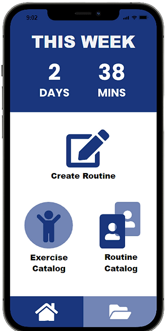
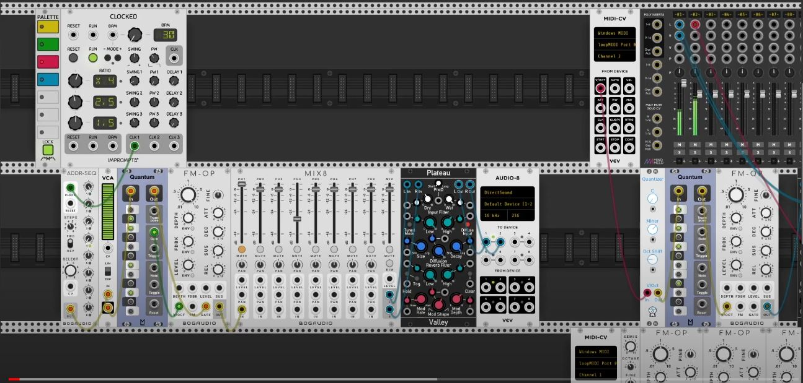

Brand Components
Font
Color Palette
The desired color palette for this portfolio should be White/Black/Blues.
Biography
I'm an Interactive Arts and Technology design student pursuing my degree in Simon Fraser University. I was born in Japan, and raised in China and Canada. I grew interested in graphics design when I was in my teens when looking through social media content and wondering how everything was made. After highschool, I intially started my education in Computer Science, but later decided to make the change to Interactive Arts and Technology after discovering it in University.
This Section is work in Progress.
work + Process Analysis 1
Interface Design "Fit 4 Life"
Fit 4 Life was an interface design created in protopie, the functionality of the product was meant as a fitness application for Elders.
 Product Website ProtopieInitial Research
The process of creating our project started with finding a specific design domain, initially our group investigated many different mobile websites popular or recommended among senior users. From there we found a few possible design domains that could be undertaken, such as Medical, Community building, Financial assistance, Detecting scams, and keeping the body in shape. Our group settled on the design domain for seniors that are concerned with their physical health. From there, we identified some common necessities for seniors to keep in shape.
- 150 minutes of moderately intense physical activity
- 75 minutes of vigorous physical activities
- At least 2 days a week of muscle strengthening activities
Then, we also identified that there are four pillars of an effective senior fitness program, balance, endurance, strength, and flexibility. We chose to focus our project's categorization mainly within these four categories to contain impactful preset exercises to elders within our application.
First Iterations of Wireframes:

Our first wireframes came from basic sketches with the main idea being a custom workout routine focused on balance, endurance, strength, and flexibility categories. Our main interactions were creating exercises and folders, browsing other users routines, and being able to rate routines based on how effective they were for the user.
After review, our second wireframes were created to contain more interactions, as well as a comment and rating system that rates how effective users found the routines and users are periodically prompted to fill in a survey similar to MBTI surveys after using a custom routine for an extended period of time.
User Testing:
The plan for our user testing phase involved conducting them both in person as well as remotely to diversify our data. In-person tests were conducted in ‘natural’ environments at home and we observed the user through watching their interactions over their shoulders. The remote tests were conducted over video call on zoom, and there we observed the user’s reactions and commentary while going through our interactive work. When it came to actually conducting tests, we assigned the user 3 different tasks, and asked them to create an exercise routine, add exercise from the exercise catalog to the library, and find and use a routine from the routine catalog. The users we asked to conduct a usability test with were seniors that were aged 65+ and within our applications target demographic.
Some problems we found were that:
- There was difficulty reading the instructions text.
- Button confusion in catalogs tab.
- Confusing user flow for creating routine.


The Final Interface:

The adjustments we made were to simplify our interaction displays and moving elements around to create a more coherent digestible product for seniors. We made fonts larger, made elements appear individually periodically, increased clarity on what is and isn’t a button, and decreased the amount of user interactions needed to create personal custom routine folders.
work + Process Analysis 2
Sound Design "Melodies in the Grotto"
 Video MediumMelodies in the Grotto was a melody created as a sound design experimenting with Synths in Rack and Max.
Initial Research:
The initial learning process for this project was relatively difficult. Rack 2 and Max were both programs that I have never previously used before, as such, I had to do a lot of digging in order to properly learn how to create sounds with synths in Rack 2 and how to extrapolate those sounds to create a collected melody in Max client.
Process Analysis:
For the project, my aim was to explore surrealist sounds that surround a cave structure, aiming to create a soundtrack composition of what someone might experience setting foot into a damp, ancient cave full of mysterious fantasy. One of the technical concepts that was explored in the synth composition was utilizing "Physical Modelling Synthesis" to create an synth effect that was extremely similar to a droplet of water coming from the ceiling of a cave. Which was a constant sound that was persistent throughout the entire audio soundtrack. The overall mood that was being worked towards was to create an immersive melody that can successfully convey the setting as well as a mysterious mood for the listener.